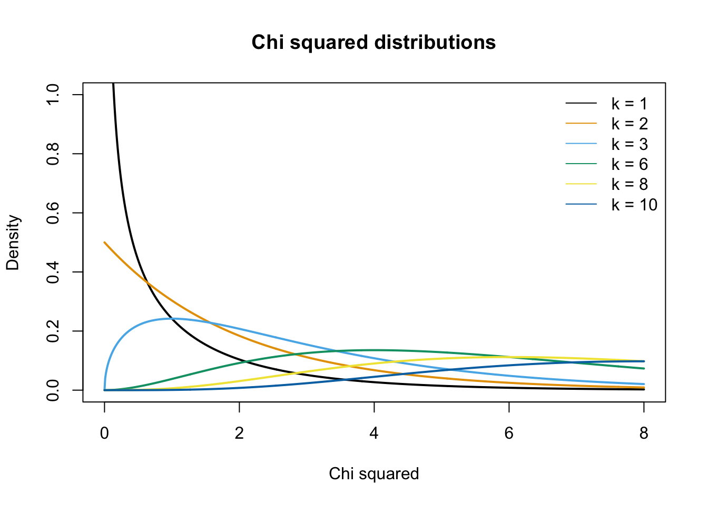
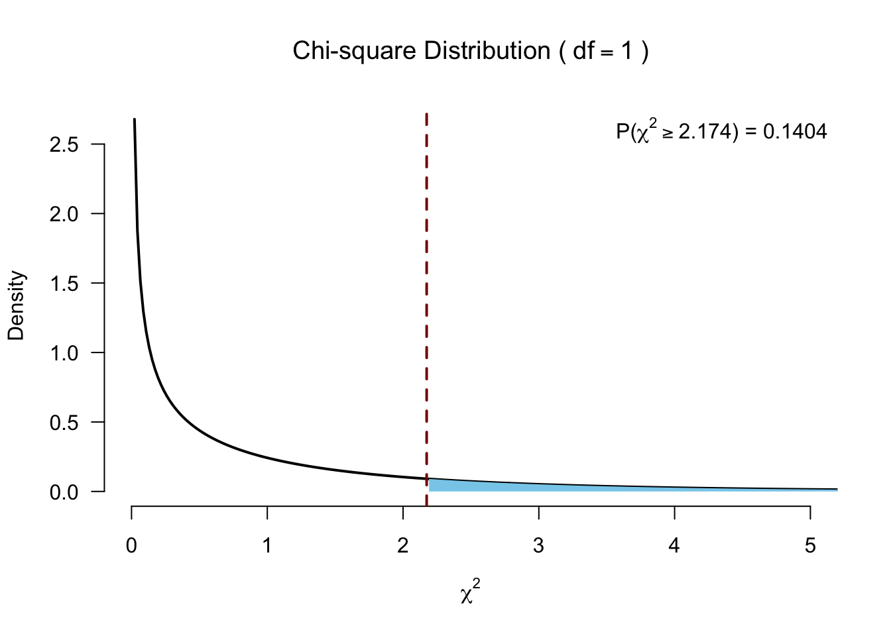
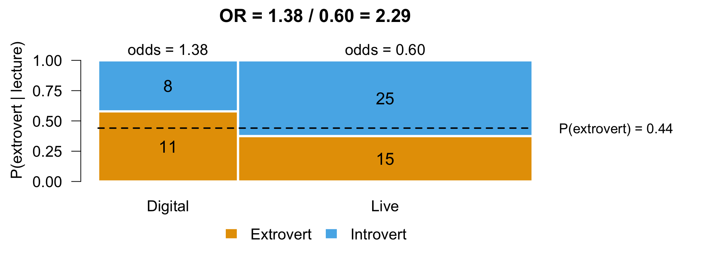
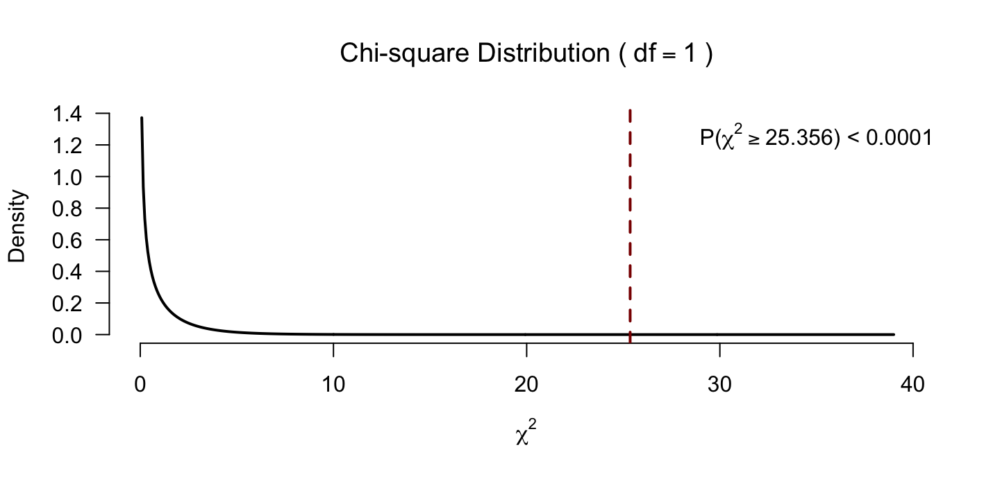
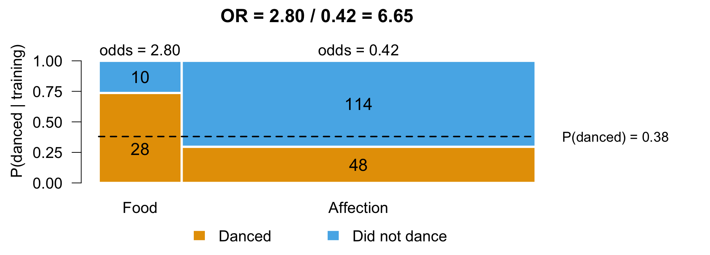

28. Chi-squared test
Contingency Tables
In this lecture we aim to:
- Discuss association between categorical variables
- Contingency tables
- Show this test in JASP
Reading: Chapter 16 (§16.1–16.10)
\(\chi^2\) test
Relation between categorical variables
\(\chi^2\) test
A “chi-squared test”, also written as \(\chi^2\) test, is any statistical hypothesis test wherein the sampling distribution of the test statistic is a chi-squared distribution when the null hypothesis is true. Without other qualification, ‘chi-squared test’ often is used as short for Pearson’s chi-squared test.
Chi-squared tests are often constructed from a Lack-of-fit sum of squared errors. A chi-squared test can be used to attempt rejection of the null hypothesis that the data are independent.
Source: wikipedia
\(\chi^2\) test statistic
\(\chi^2 = \sum \frac{(\text{observed}_{ij} - \text{prediction}_{ij})^2}{\text{prediction}_{ij}}\)
Contingency table
\(\text{observed}_{ij} = \begin{pmatrix} o_{11} & o_{12} & \cdots & o_{1j} \\ o_{21} & o_{22} & \cdots & o_{2j} \\ \vdots & \vdots & \ddots & \vdots \\ o_{i1} & o_{i2} & \cdots & o_{ij} \end{pmatrix}\)
\(\text{prediction}_{ij} = \begin{pmatrix} p_{11} & p_{12} & \cdots & p_{1j} \\ p_{21} & p_{22} & \cdots & p_{2j} \\ \vdots & \vdots & \ddots & \vdots \\ p_{i1} & p_{i2} & \cdots & p_{ij} \end{pmatrix}\)
\(\chi^2\) distribution
The \(\chi^2\) distribution describes the test statistic under the assumption of \(H_0\), given the degrees of freedom.
\(df = (r - 1) (c - 1)\) where \(r\) is the number of rows and \(c\) the number of columns.
Assumptions
- Independence
- Each person contributes to one cell only (no repeated measures)
- Expected frequencies not too small
- No normality assumption (categorical variables are not continuous)
Experiment
Data
Calculating \(\chi^2\)
observed <- table(results[, c("Lecture", "Personality")])
observed Personality
Lecture Extrovert Introvert
Digital 11 8
Live 15 25\(\text{observed}_{ij} = \begin{pmatrix} 11 & 8 \\ 15 & 25 \\ \end{pmatrix}\)
Calculating the model predictions
\(\text{prediction}_{ij} = \text{expected}_{ij} = \frac{\text{row total}_i \times \text{column total}_j}{n }\)
n <- sum(observed)
totExt <- colSums(observed)[1]
totInt <- colSums(observed)[2]
totDig <- rowSums(observed)[1]
totLiv <- rowSums(observed)[2]
addmargins(observed) Personality
Lecture Extrovert Introvert Sum
Digital 11 8 19
Live 15 25 40
Sum 26 33 59Prediction under \(H_0\) for one cell
- Under \(H_0\), lecture type and personality are independent
- \(P(A \text{ and } B) = P(A) \times P(B) \qquad P(A \mid B) = P(A)\)
- So the share of extroverts is the same for digital and live
pDigital <- totDig / n # P(digital), row total / n
pExtrovert <- totExt / n # P(extrovert), column total / n
pDigital * pExtrovert * n # predicted number of digital extroverts Digital
8.372881 \(\small \text{prediction}_{\text{digital, extrovert}} = \underbrace{\dfrac{19}{59}}_{P(\text{digital})} \times \underbrace{\dfrac{26}{59}}_{P(\text{extrovert})} \times \underbrace{\;59\;}_{n} = \dfrac{\text{row total} \times \text{column total}}{n} = 8.37\)
Calculating the model
\(\text{prediction}_{ij} = \text{expected}_{ij} = \frac{\text{row total}_i \times \text{column total}_j}{n }\)
Personality
Lecture Extrovert Introvert
Digital 8.372881 10.62712
Live 17.627119 22.37288\(\text{prediction}_{ij} = \begin{pmatrix} 8.3728814 & 10.6271186 \\ 17.6271186 & 22.3728814 \\ \end{pmatrix}\)
Error = Observed - Model
observed Personality
Lecture Extrovert Introvert
Digital 11 8
Live 15 25modelPredictions Personality
Lecture Extrovert Introvert
Digital 8.372881 10.62712
Live 17.627119 22.37288observed - modelPredictions Personality
Lecture Extrovert Introvert
Digital 2.627119 -2.627119
Live -2.627119 2.627119Calculating \(\chi^2\)
\(\chi^2 = \sum \frac{(\text{observed}_{ij} - \text{prediction}_{ij})^2}{\text{prediction}_{ij}}\)
# Calculate chi squared
chi.squared <- sum((observed - modelPredictions)^2 / modelPredictions)
chi.squared[1] 2.173775Testing for significance
\(df = (r - 1) (c - 1)\)
\(P\)-value

Checking expected counts
- With 2 \(\times\) 2 tables, no expected values should be below 5
- In larger tables, all expected counts should be greater than 1 and no more than 20% less than 5
modelPredictions Personality
Lecture Extrovert Introvert
Digital 8.372881 10.62712
Live 17.627119 22.37288- Smallest expected count is 8.37, so Pearson’s \(\chi^2\) holds
- In JASP via Cells → Counts → Expected
Fisher’s exact test
Calculates the exact probability of the \(\chi^2\) statistic for small samples (at least one cell of the table has an expected count smaller than 5), when the \(\chi^2\) approximation does not yet suffice.
Calculate all possible permutations.
- Expected cell size < 5
Standardized residuals
\(\text{standardized residuals} = \frac{ \text{observed}_{ij} - \text{prediction}_{ij} }{ \sqrt{ \text{prediction}_{ij} } }\)
(observed - modelPredictions) / sqrt(modelPredictions) Personality
Lecture Extrovert Introvert
Digital 0.9079088 -0.8058829
Live -0.6257329 0.5554164Effect size
Odds ratio based on the observed values
observed Personality
Lecture Extrovert Introvert
Digital 11 8
Live 15 25Odds visualized

- Bar height is \(P(\text{extrovert} \mid \text{lecture})\), bar width the group size
- \(\text{odds}_{\text{digital}} = \dfrac{P(\text{extrovert} \mid \text{digital})}{P(\text{introvert} \mid \text{digital})} = \dfrac{11 / 19}{8 / 19} = \dfrac{11}{8}\)
- Under \(H_0\) both bars split at the dashed line, \(P(\text{extrovert})\), so \(OR = 1\)
Odds
Personality
Lecture Extrovert Introvert
Digital 11 8
Live 15 25The extrovert/introvert ratio for digital and live audiences:
- \(\text{odds}_{\text{digital}} = \frac{\text{extrovert}}{\text{introvert}} = \frac{ 11 }{ 8 } = 1.38\)
- \(\text{odds}_{\text{live}} = \frac{\text{extrovert}}{\text{introvert}} = \frac{ 15 }{ 25 } = 0.60\)
In the digital responses, there are +- 1.38 times as many extroverts as introverts. In the live responses, there are +- 0.60 times as many extroverts as introverts.
Odds ratio
Is the ratio of these odds.
\(OR = \dfrac{\text{odds}_{\text{digital}}}{\text{odds}_{\text{live}}} = \dfrac{11 / 8}{15 / 25} = \dfrac{1.38}{0.60} = 2.29\)
- \(OR = 1\) means the same odds in both groups (no association)
Odds, the other way around
Personality
Lecture Extrovert Introvert
Digital 11 8
Live 15 25Alternatively, we can look at the ratios of digital/live for extroverts and introverts:
- \(\text{odds}_{\text{extrovert}} = \frac{\text{digital}}{\text{live}} = \frac{ 11 }{ 15 } = 0.73\)
- \(\text{odds}_{\text{introvert}} = \frac{\text{digital}}{\text{live}} = \frac{ 8 }{ 25 } = 0.32\)
For the extroverts, there are +- 0.73 times as many digital viewers as live viewers. For the introverts, there are +- 0.32 times as many digital viewers as live viewers.
Odds ratio, the other way around
\(OR = \dfrac{\text{odds}_{\text{extrovert}}}{\text{odds}_{\text{introvert}}} = \dfrac{11 / 15}{8 / 25} = \dfrac{0.73}{0.32} = 2.29\)
\(\dfrac{\text{odds}_{\text{digital}}}{\text{odds}_{\text{live}}} = \dfrac{\text{odds}_{\text{extrovert}}}{\text{odds}_{\text{introvert}}} = 2.29\)
- Same OR, whichever way you read the table
For these data, the odds of watching digitally were approximately 2.29 times higher for extroverts than for introverts. The odds ratio also accounts for the scores in both conditions—watching digitally and watching live—by comparing the odds of watching digitally to live viewing across both personality types.
Odds ratio shortcut
\(\begin{pmatrix} a & b \\ c & d \\ \end{pmatrix} = \begin{pmatrix} 11 & 8 \\ 15 & 25 \\ \end{pmatrix}\)
\(OR = \dfrac{a / b}{c / d} = \dfrac{a / c}{b / d} = \dfrac{a \times d}{b \times c} = \dfrac{11 \times 25}{8 \times 15} = 2.29\)
- JASP shows the log odds ratio by default, where \(\log(OR) = 0\) means no association
More examples
Book example
- 200 cats trained to dance, with food or affection as reward
- Training (food or affection, not both)
- Dance (the cat learned to dance or it did not)
cats <- matrix(c(28, 48, 10, 114), nrow = 2,
dimnames = list(Training = c("Food", "Affection"),
Dance = c("Yes", "No")))
addmargins(cats) Dance
Training Yes No Sum
Food 28 10 38
Affection 48 114 162
Sum 76 124 200\(\chi^2\) and \(p\)-value
# row total x column total / n, for every cell
catsModel <- outer(rowSums(cats), colSums(cats)) / sum(cats)
catsChi <- sum((cats - catsModel)^2 / catsModel)
catsChi[1] 25.35569
Odds visualized

- Bar height is \(P(\text{danced} \mid \text{training})\), bar width the group size
- \(\text{odds}_{\text{food}} = \dfrac{P(\text{danced} \mid \text{food})}{P(\text{did not dance} \mid \text{food})} = \dfrac{28 / 38}{10 / 38} = \dfrac{28}{10}\)
- Under \(H_0\) both bars split at the dashed line, \(P(\text{danced})\), so \(OR = 1\)
Independent predictors
Accidents in the driving simulator from lecture 17 (alcohol \(\times\) speed)
| Alcohol / speed | none | some | much |
|---|---|---|---|
| none | 20 | 20 | 20 |
| some | 20 | 20 | 20 |
| much | 20 | 20 | 20 |
- \(\text{prediction}_{ij} = \frac{60 \times 60}{180} = 20\) in every cell, same as observed
- Balanced design, so \(\chi^2(4) = 0.00\) (\(p = 1.00\)) and alcohol and speed are independent
JASP

Closing
Recap
- Chi-square test assesses categorical associations
- Can be used to assess (in)dependence between predictors
- Has test statistic (χ²) + effect size (odds ratio)
Next Time
- Bayesian ANOVA (lecture 29)
Recommended Exercises
Labcoat Leni 16.1
Daniels (2012): The impact of sexualized images on women’s self-evaluations
Is the type of image viewed related to self-objectification?
picture: performance vs. sexualized athlete imagestheme_present: self-objectification theme present or absentself_evaluation: counts
Labcoat Leni 16.2
Beckham (1929): Is the Black American happy?
Do yes/no answers differ between professions? One test for each of the three questions.
profession: the respondent’s jobresponse: yes or nohappy,you_happy,should_be_happy: counts for each question
Data (.jasp) · Results (.jasp) · Results (.html)
Note
This study asked three simple questions, yet the data are fascinating. Pioneering school psychologist Albert Sidney Beckham (1897–1964) raised further hypotheses that could be tested, it unearthed very different views in different professions, and it illuminated very important social and psychological issues.
Contact